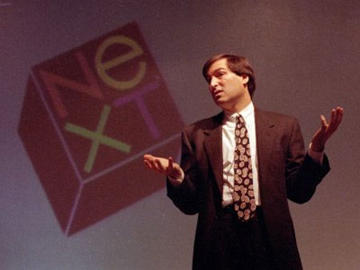
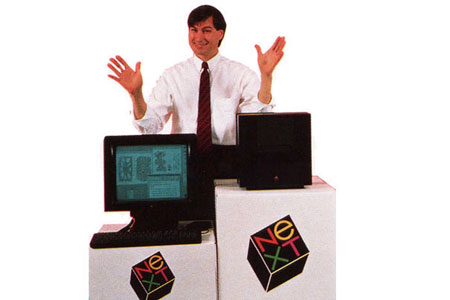

Chương 17

ừ sau khi trở về từ châu Âu vào tháng 8 năm 1985, khi vẫn đang suy tính sẽ làm gì tiếp theo thì Jobs gọi điện cho Paul Berg - một nhà sinh hóa học ở Stanford để cùng thảo luận về những tiến bộ khoa học trong việc cấy gen và tái tổ hợp DNA. Berg mô tả những khó khăn khi thực hiện những thí nghiệm trong phòng thí nghiệm sinh học và thời gian nuôi cấy đến khi có kết quả phải kéo dài hàng tuần liền. “Sao anh không mô phỏng quá trình đó bằng máy tính?” - Jobs hỏi. Berg trả lời rằng những máy tính có khả năng thực hiện những mô phỏng đó có giá quá đắt đối với phòng thí nghiệm của một trường đại học. “Đột nhiên, anh ấy trở nên rất phấn khích với khả năng đó” - Berg nhớ lại - “Anh ấy nung nấu ý tưởng đó khi quyết định thành lập một công ty mới. Anh ấy trẻ, giàu có và phải tìm ra thứ gì đó để làm trong suốt phần đời còn lại của mình”.
Jobs thảo luận với các học viện để xem nơi làm việc của họ cần những thiết bị gì. Đó là điều mà ông chú tâm kể từ năm 1983. Đây cũng là năm ông tới thăm phòng khoa học máy tính ở Brown để giới thiệu Macintosh không những là một chiếc máy tính làm việc hiệu quả mà còn có nhiều tính năng hữu dụng cho các phòng thí nghiệm của các trường đại học. Mong ước của các nghiên cứu sinh của các trường đại học là có một nơi làm việc vừa hiệu quả lại vừa kín đáo. Với tư cách là người đứng đầu bộ phận Macitosh, Jobs đưa ra một bản dự án để tạo ra một chiếc máy với tên gọi Big Mac. Nó sẽ có hệ điều hành UNIX với giao diện thân thiện của Macintosh. Nhưng sau khi Jobs bị trục xuất khỏi bộ phận Macitosh, người kế nhiệm Jean - Louis Gassée đã hủy bỏ dự án Big Mac.
Khi chuyện đó xảy ra, Jobs đã vô cùng đau khổ gọi điện cho Rich Page - kỹ thuật viên thiết kế bộ chip xử lý của Big Mac. Đó là cuộc gọi cuối cùng trong hàng loạt những cuộc trò chuyện của Jobs với rất nhiều nhân viên bất mãn của Apple. Họ hối thúc Jobs mở một công ty mới và giải thoát họ khỏi Apple. Sau dịp nghỉ lễ ngày Quốc tế lao động, kế hoạch dần được hình thành và triển khai.
Jobs nói chuyện với Bud Tribble, trưởng bộ phận phần mềm của Macitosh thưở ban đầu và nói qua về ý tưởng thành lập một công ty có thể xây dựng các trụ sở làm việc vừa hiệu quả mà vừa riêng tư. ông cũng tuyển luôn kỹ thuật viên George Crow và nhân viên điều hành Sunsan Barnes từ bộ phận Macintosh, những người đã từng nói chuyện với Jobs và quyết định rời bỏ công ty để hợp tác với ông.
Vị trí quan trọng còn lại mà Jobs đang tìm kiếm là một người có thể tiếp thị sản phẩm mới tới các trường đại học. ứng cử viên sáng giá cho chức vụ đó là Dan‟1 Lewin - đang làm việc tại Apple và đã từng lập các liên hội các trường Đại học để mua Macintosh với số lượng lớn. Ngoài việc thiếu hai chữ cái đầu tiên trong phần họ, Lewin có vẻ ngoài ưa nhìn của Clark Kent và sự bóng bẩy của người Princeton(25). Anh ta và Jobs có một điểm chung: Lewin đã từng viết luận văn tốt nghiệp về Bob Dylan và khả năng lãnh đạo đầy cuốn hút và Jobs thì hiểu biết về cả hai vấn đề trên.
Một nhóm bạn đại học cùng với Lewin bất ngờ được chọn vào nhóm Macitosh nhưng anh đã vô cùng chán nản khi biết Jobs rời công ty và Bill Campbell đã tái cơ cấu lại bộ phận Marketing theo xu hướng làm giảm vai trò của Marketing trực tiếp tới các trường đại học. Anh ấy cũng định gọi cho Jobs vào đợt nghỉ Quốc tế Lao động nhưng Jobs đã gọi trước. Lewin đã lái xe đến khu nhà tuềnh toàng của Jobs, cùng đi dạo và bàn luận về khả năng thành lập một công ty mới. Lewin vô cùng hào hứng nhưng lại không sẵn sàng tham gia. Anh sắp sửa cùng Campbell tới bang Austin vào tuần sau và anh cũng muốn chờ đợi xem mọi việc thế nào ròi mới quyết định. Sau khi quay về, anh đã trả lời với Jobs là đồng ý. Thông tin này đến rất đúng lúc, hôm đó là ngày 13 tháng 9, vào đúng buổi họp lãnh đạo Apple.
Mặc dù trên danh nghĩa Jobs là chủ tịch hội đồng quản trị nhưng từ sau ngày bị trục xuất khỏi Apple, ông chưa bao giờ góp mặt trong bất cứ buổi họp nào. ông gọi cho Sculley và nói rằng ông sẽ tham gia và bảo Sculley cho thêm một phần nhỏ vào cuối buổi họp là mục “báo cáo của chủ tịch”. Jobs không nói rõ nội dung của phần này và Sculley cứ nghĩ rằng đó chỉ là những chỉ trích về việc tái cơ cấu vừa rồi. Thay vào đó, khi đến lượt mình nói, Jobs đã mô tả cho ban lãnh đạo nghe về kế hoạch thành lập công ty mới: “Tôi suy nghĩ rất nhiều và đã đến lúc để tôi tiếp tục cuộc sống của mình”. Jobs bắt đầu: “Hiển nhiên là tôi đã tìm được thứ để làm. Tôi đã 30 tuổi rồi”. Sau đó ông đề cập đến một số ghi chú đã được chuẩn bị sẵn để mô tả kế hoạch tạo dựng một công ty dành cho thị trường giáo dục trình độ cao của ông. ông hứa rằng công ty mới này sẽ không cạnh tranh với Apple và muốn đem theo một ít nhân lực không quan trọng, ông cũng đề nghị từ chức chủ tịch Apple và hy vọng hai công ty sẽ hợp tác với nhau trong tương lai. ông nghĩ có lẽ Apple sẽ muốn mua lại quyền phân phối đối với những sản phẩm của ông hoặc các giấy phép phần mềm của Macintosh.
Mike Markkula lo ngại khả năng là Jobs sẽ lôi kéo một số nhân viên khỏi Apple. “Tại sao anh lại lấy một số nhân viên theo anh?” Ông ta hỏi.
“Đừng lo lắng”, Jobs đảm bảo với ông ta và ban lãnh đạo rằng “Đây là những nhân viên cấp thấp và sẽ không ảnh hưởng đến hoạt động công ty, và dù gì thì họ sẽ vẫn rời đi”.
Ban lãnh đạo ban đầu có vẻ bằng lòng với đề đạt của Jobs. Sau cuộc thảo luận kín, các giám đốc thậm chí còn đề nghị là Apple sẽ góp 10% cổ phần cho công ty mới và Jobs vẫn giữ chức chủ tịch hội đồng quản trị.
Đêm đó, Jobs và 5 “kẻ phản bội” gặp nhau ăn tối tại nhà ông. ông vui mừng với việc đầu tư của Apple, nhưng những người khác lại cho rằng như thế thật không khôn ngoan chút nào. Họ cùng đồng ý rằng tất cả họ cùng xin nghỉ việc một lúc là cách hay nhất. Họ có thể đưa ra những lí do nghỉ việc hợp lý và trong sạch.
Vì thế, Jobs đã viết một lá thư cho Sculley chính thức nói tên của năm nhân viên định thôi việc, họ cùng nhau ký ở phía dưới chữ ký của ông và ngay trước buổi họp nhân viên lúc 7:30 sáng ngày hôm sau, Jobs đã lái xe đến Apple và đưa nó cho Sculley.
“Steve, đây không phải là những nhân viên cấp thấp” - Sculley nói
“À, những người này sớm hay muộn cũng định nghỉ” - Jobs tiếp lời - “Họ đang định nộp đơn xin nghỉ việc của họ vào 9 giờ sáng nay”.
Cách nói của Jobs rất chân thành. Năm nhân viên đó không phải những người quản lý các bộ phận cũng như không phải là thành viên thuộc nhóm chính của Sculley. Trên thực tế, họ đều cảm thấy mình không được coi trọng với cách tái cơ cấu mới của công ty. Nhưng theo quan điểm của Sculley, họ là những người đóng vai trò rất quan trọng: Page là một thành viên Apple, Lewin là nhân vật chủ chốt cho thị trường giáo dục cấp cao. Thêm vào đó, họ đều biết về dự án Big Mac, mặc dù nó đã bị hoãn lại thì đây vẫn là thông tin độc quyền. Tuy nhiên, Sculley vẫn rất lạc quan.
Thay vì đẩy sự việc lên đỉnh điểm, ông ta đề nghị Jobs tiếp tục giữ chức chủ tịch. Còn Jobs nói rằng ông sẽ suy nghĩ thêm về việc đó.
Nhưng khi Sculley tới buổi họp nhân viên vào lúc 7:30, ông ta nói về những người định ra đi và đã có một vụ om sòm xảy ra. Theo Sculley thì hầu hết họ đều người đều cảm thấy Jobs đã vi phạm nghĩa vụ chủ tịch của mình và họ đều choáng váng trước sự phản bội công ty của Jobs:
“Chúng ta nên bóc trần âm mưu của hắn ta, như thế thì mọi người mới thôi tôn hắn như vị Chúa cứu thế đi”, Campbell hét lên, theo lời Sculley. Mặc dù sau này Campbell trở thành luật sư tuyệt vời của Jobs và là một thành viên tích cực trong ban lãnh đạo nhưng ông cũng phải thừa nhận rằng ông đã rất kích động vào sáng hôm đó:
“Tôi đã giận dữ khủng khiếp, đặc biệt khi Jobs lấy đi nhân viên Dan Lewin”. Campbell nhớ lại:
“Dan‟ đã gây dựng được nhiều mối quan hệ với các trường đại học. Cậu ấy luôn cằn nhằn về những khó khăn khi làm việc với Steve, thế mà cậu ấy lại bỏ đi”, Campbell đã rất tức giận và rời khỏi buổi họp để gọi về nhà Lewin. Khi nghe vợ Lewin nói anh ấy đang tắm, Campbell đã nói rằng: “Tôi sẽ chờ”. Vài phút sau, khi cô ấy nói Lewin vẫn đang tắm, Campbell vẫn nói rằng: “Tôi sẽ chờ”. Cuối cùng, khi Lewin nghe điện thoại, Campbell hỏi chuyện đó có phải là sự thật không.
Lewin thừa nhận, và, Campbell dập máy mà không nói bất cứ lời nào.
Sau khi nghe được thông tin về sự giận giữ của các nhân viên cấp cao, Sculley đã khảo sát các thành viên ban lãnh đạo. Họ cũng có cảm nhận tương tự, rằng Jobs đã dùng những lời hứa hẹn là không lấy đi những nhân viên quan trọng để lừa dối họ. Arthur Rock đặc biệt tức giận. Mặc dù luôn đứng về phía Sculley trong cuộc đối đầu Memorial Day, ông vẫn có mối quan hệ họ hàng bên nội với Jobs. Mới chỉ tuần trước, Arthur còn mời Jobs cùng bạn gái tới gặp mặt gia đình ông tại San Francisco và cả bốn người đã có bữa tối tuyệt vời tại nhà riêng trên tòa cao ốc Pacific của Rock. Jobs đã không đề cập gì về công ty mới mà ông dự định thành lập nên Rock cảm thấy bị phản bội khi nghe được thông tin từ Sculley. “Hắn đã đứng trước ban lãnh đạo và lừa dối tất cả chúng tôi” - Rock gầm gừ - “Hắn nói với chúng tôi rằng hắn đang nghĩ đến việc hình thành một công ty khi mà thực tế hắn đã thực sự thành lập nó rồi. Hắn nói chỉ định lấy một số nhân viên tầm trung. Nhưng rồi lại là năm nhân viên cao cấp ra đi”. Với Markkula, dù không biểu hiện gì nhiều song vẫn có thể nhận ra sự buồn bã, đau đớn - “Anh ta lấy đi một vài viên chức cao cấp mà đã dàn xếp từ trước khi rời đi. Đấy không phải là cách xử lý mọi việc. Đó là sự vô đạo đức”.
Sau dịp cuối tuần, cả ban lãnh đạo và nhân viên đều thuyết phục Sculley rằng Apple sẽ phải tuyên chiến với người đồng sáng lập công ty của họ. Markkula đưa ra một tuyên bố chính thức buộc tội Jobs về hành động “mâu thuẫn trực tiếp với phát ngôn của anh ta rằng anh ta sẽ không tuyển dụng bất cứ nhân lực chủ chốt nào của Apple”. Ông ta còn quan ngại rằng: “Chúng tôi đang đánh giá những hành động có thể tiếp diễn”. Nhật báo Wall Street đã trích dẫn lời của Campbell:
“quá choáng váng và sững sờ” trước hành động của Jobs.
Jobs đã rời khỏi buổi họp với Sculley và nghĩ rằng mọi thứ có thể tiến triển thuận lợi, vì thế mà ông đã giữ im lặng. Nhưng sau khi đọc báo, ông thấy rằng mình buộc phải đáp trả. Ông đã gọi điện cho một số phóng viên thân quen và mời họ tới nhà cho một số mẩu tin vắn riêng tư vào những hôm sau. Sau khi gọi cho Andy Cunningham - người phụ trách nắm giữ các phương tiện truyền thông tại Regis McKenna. “Tôi tới khu nhà tuềnh toàng của ông tại Woodside,” cô nhớ lại, “và tôi thấy ông đang tất tưởi nấu nướng cùng năm đồng nghiệp và vài phóng viên ở bên ngoài bãi cỏ”. Jobs bảo cô rằng ông sắp tổ chức một buổi họp báo chính thức và sẽ tuôn ra những lời xúc phạm. Cunningham thấy lo sợ và bảo Jobs: “Như thế thì sẽ gây ảnh hưởng xấu đến ngài đấy”. Cuối cùng ông rút lại quyết định và nói rằng sẽ đưa cho các phóng viên bản sao lá thư có kèm chữ ký của nhân viên và hạn chế việc bình luận mỉa mai đi.
Jobs đã cân nhắc việc sẽ chỉ gửi cho phóng viên lá thư có kèm chữ ký nhưng Susan Barnes thuyết phục Jobs rằng như thế thì tỏ vẻ khinh thường quá. Thay vào đó, Jobs lái xe đến nhà Markkula, lúc đó AI Eisenstat cũng ở đấy. Họ đã có một cuộc nói chuyện rất căng thẳng khoảng 15 phút, vốn định ra ngoài lánh mặt chờ nhưng sau 15 phút, Barnes đã mở cửa vào để ngăn Jobs nói những điều không nên. Jobs để lại lá thư mà ông soạn bằng máy Macintosh và in bằng công nghệ mới - LaserWriter:
17 tháng 9 năm 1985
Mike yêu quý
Báo sáng nay đà đưa tin rằng Apple đang định truất quyền tôi khỏi ghế Chủ tịch. Tôi không biết họ lấy nguồn tin từ đâu nhưng họ đang gây hiểu nhầm cho công chúng và thật không công bằng với tôi.
Tôi nhớ rằng trong buổi họp ban lãnh đạo vào thứ 5 tuần trước tôi đà thông báo về quyết định đầu tư mạo hiểm mới của mình và đề nghị từ chức chủ tịch.
Ban lănh đạo đà từ chối yêu cầu từ chức và còn đề nghị tôi hoàn việc từ chức lại một tuần.
Tôi đà đồng ý và được ban lanh đạo khích lệ rằng sẽ xem xét đề Ấn mới này và rằng có thể Apple sẽ cùng đầu tư vào đó. Vào thứ sáu, sau khi nói chuyện với John Sculley - người có thể sẽ cùng hợp tác với tôi - đã xác nhận thiện chí của Apple là sẽ cùng thảo luận về vấn đề nhân công giữa Apple và dự án mới của tôi.
Rồi sau đó, công ty lại xuất hiện trên báo chí với tư cách thù địch với tôi và dự án này. Theo đó, tôi phải nhấn mạnh lại về việc chấp nhận đơn từ chức một cách tức thời của tôi.
Như anh biết, việc tái cơ cấu công ty đà đẩy tôi vào tình thế không việc làm cũng như không thể tiếp cận những báo cáo quản lý thường xuyên của công ty. Tôi mới 30 tuổi và tôi vẫn muốn cống hiến và thành đạt.
Sau những gì chúng ta cùng làm với nhau, tôi mong việc ra đi này sẽ diễn ra trong yên bình và được cả đôi bên tôn trọng.
Trân trọng, Steven p. Jobs
Khi một nhân viên từ nhóm thiết bị tới văn phòng của Jobs để gói ghém đồ đạc, anh này đã nhìn thấy một khung ảnh ở trên sàn. Nó là ảnh của Jobs và Sculley trong một cuộc nói chuyện thân mật với lời đề tặng mới chỉ khoảng bảy tháng trước đây: “Đây là Những Ý tưởng Tuyệt vời, Những Kinh Nghiệm tuyệt vời và Tình Bạn tuyệt vời! John”. Khung kính đã vỡ. Jobs đã ném nó xuống sàn ròi bỏ đi. Từ hôm đó, ông ấy không bao giờ nhắc đến Sculley nữa.
Khi Apple thông báo về quyết định từ chức của Job, cổ phiếu của hãng tăng lên một điểm, tức là khoảng 7%. “Cổ đông vùng bờ Đông luôn lo lắng về việc “khu vực California” sẽ điều hành của công ty” - biên tập viên của bản tin chứng khoán công nghệ giải thích - “bây giờ, việc cả Jobs và Wozniak từ chức đã trấn an được các cổ đông”. Nhưng Nolan Bushnell, người sáng lập Atari (10 năm trước là một cố vấn được nhiều người trọng vọng) đã nói với Time rằng tài năng của Jobs đã bị uổng phí”. “Cảm hứng của Apple đến từ đâu đây? Phải chăng Apple đang định lấy sự lãng mạn từ thương hiệu Pepsi?”
Sau vài ngày nỗ lực dàn xếp với Jobs thất bại, Sculley và ban lãnh đạo Apple quyết định kiện ông vì tội “vi phạm bổn phận được ủy thác”. Việc tố tụng nêu rõ Jobs đã lạm dụng quyền hành:
Mặc dù Jobs được ủy thác điều hành Apple, nhưng trong khi phục vụ cho công ty với tư cách là chủ tịch hội đồng quản trị của Apple và một nhân viên tại Apple thì Jobs lại thể hiện lòng trung thành giả tạo đối với những lợi nhuận của Apple.
(a) Bí mật lên kế hoạch thành lập một công ty để cạnh tranh với Apple.
(b) Bí mật âm mưu chiếm dụng trái phép những ưu điểm trong các mẫu thiết kế, trong bản kế hoạch phát triển và marketing của Apple cho sản phẩm Next Generation (dòng máy đời sau).
(c ) Bí mật lôi kéo những nhân lực chủ chốt của Apple
Vào thời điểm đó, Jobs đang sở hữu 6,5 triệu cổ phiếu của Apple, tương đương với 11% cổ phần của công ty, trị giá hơn 100 triệu đô. Ông bắt đầu bán cổ phần của mình và trong vòng năm tháng ông đã bán sạch chúng và chỉ giữ lại một cổ phần để giúp ông có thể tham gia các cuộc họp cổ đông nếu muốn. Ông rất giận dữ và điều đó ảnh hưởng rất nhiều đến nhiệt huyết làm việc cũng như khiến ông ngay lập tức muốn trở thành một đối thủ thực sự của Apple. Nhân viên của công ty mới - Joanna Hoffman nói rằng “Jobs thật sự tức giận, ông nhắm vào thị trường giáo dục - một mảng rất mạnh của Apple đơn giản chỉ vì lòng thù hận. Steve làm vậy chỉ để trả thù”.
Tất nhiên, Jobs không nhìn sự việc theo hướng đó. ông trần tình với tờ Newsweek rằng:
“tôi chẳng còn xu lẻ nào trong túi cả”. Lại một lần nữa ông mời những phóng viên thân thiết của mình tới nhà riêng và lần này không có Andy Cunningham ở đó để nhắc nhở ông phải thận trọng nữa. ông phủ nhận những cáo buộc lôi kéo năm đồng nghiệp khỏi Apple: “Tất cả họ chủ động gọi cho tôi” Jobs nói với cả nhóm phóng viên đang đứng rải rác trong ngôi nhà tuềnh toàng của mình.
Jobs tiếp lời: “Họ đã nghĩ đến việc rời bỏ công ty từ trước ròi. Chính Apple đã làm mọi người nhầm lẫn”.
Ông quyết định hợp tác với tạp chí Newsweek để đưa những câu chuyện và những bài phỏng vấn về mình lên mặt báo. Ông nói với tạp chí này rằng: “Việc tôi giỏi nhất là tìm ra được một nhóm người tài năng và làm việc cùng họ”, ông cũng quyết tâm sẽ giữ vững thái độ với Apple:
“Tôi sẽ luôn nhớ về Apple như cách một người đàn ông nhớ về người phụ nữ đầu tiên mà anh ta yêu”. Nhưng nếu cần thiết, ông cũng luôn sẵn sàng đối đầu với ban điều hành của Apple. “Giữa nơi công cộng mà một ai đó gọi anh là tên trộm cắp thì đương nhiên anh phải phản kháng thôi”. Apple cũng đã thái quá khi coi Jobs là một mối họa và kiện ông. Cũng thật buồn. Điều đó cho thấy Apple không còn là một công ty đáng tin cậy nữa. “Thật khó tin rằng một công ty đáng giá 2 tỷ đô với 4.300 nhân viên không thể cạnh tranh được với sáu „ kẻ cưỡi ngựa‟ - dân cao bồi miền viễn Tây, nước Mỹ”.
Để ngăn lại chuỗi hành động gây bất lợi của Jobs, Sculley đã gọi cho Wozniak và thuyết phục Woz lên tiếng: “Steve là gã có thể xúc phạm và gây hại cho mọi người” - Wozniak nói với Time ngay tuần đó. Woz còn tiết lộ thêm rằng Jobs đã đề nghị anh tham gia vào công ty mới - Jobs đã sử dụng cách xảo quyệt này để giáng một đòn vào ban quản trị hiện tại của Apple. Còn với báo San Francisco Chronicle, Wozniak đã thuật lại việc bị Jobs can thiệp và dừng các hoạt động của Frog Design từ xa với cái cớ là điều đó có thể cạnh tranh với các sản phẩm của Apple: “Tôi rất trông chờ một sản phẩm tuyệt vời và tôi cũng mong là cậu ấy thành công nhưng tôi không còn niềm tin vào cậu ta nữa”.
Hãy tự đứng lên bằng đôi chân của bạn:
“Điều đúng đắn nhất đối với Jobs mà nói thì đó là khi chúng tôi sa thải anh ta”- Arthur Rock nói. Theo lý thuyết thì những tình yêu gặp trở ngại sẽ làm người ta trưởng thành và hiểu biết hơn. Nhưng mọi chuyện không đơn giản như thế. Tại công ty mà Jobs thành lập sau khi bị cách chức tại Apple, Jobs có thể thỏa sức thể hiện con người mình, cả tốt lẫn xấu. Ông không bị ràng buộc. Kết quả là một loạt sản phẩm đặc sắc đã khai sáng cho thị trường công nghệ ảm đạm. Đây mới là những kinh nghiệm học hỏi đích thực. Những gì đã đưa ông đến với những thành công không phải là việc bị cách chức khỏi Apple mà là việc ông học được từ chính những thất bại của mình.
Điều đầu tiên mà ông làm là thể hiện niềm đam mê của mình với thiết kế. ông chọn cho công ty mới một cái tên rất cởi mở: Next (kế tiếp). Để khiến nó trở nên thật khác biệt, ông đã đi học một lớp thiết kế logo. Vì thế, ông kết thân với Paul Rand, một chuyên gia thiết kế logo. Vào năm 1971, nhà thiết kế đồ họa sinh ra tại Brooklyn này đã tạo ra những logo nổi tiếng nhất trong ngành kinh doanh, bao gồm logo cho Esquire, IBM, Westinghouse, ABC, và UPS. Anh ta vẫn đang còn hợp đồng với IBM và giám sát viên ở đó nói rằng hiển nhiên anh ta sẽ gặp rắc rối nếu thiết kế logo cho một công ty khác. Vì thế Jobs đã nhấc điện thoại gọi cho giám đốc điều hành của IBM, John Akers. Akes đang không ở thị trấn và Jobs lại nài nỉ Phó chủ tịch Paul Rizzo để được thông qua việc này. Sau khoảng 2 ngày, Rizzo đã đúc rút được rằng phản kháng lại Jobs là điều vô ích và ông đã cho phép Rand được làm việc cho Jobs.
Rand bay tới Palo Alto và dành thời gian đi bộ, nói chuyện và lắng nghe quan điểm của Jobs. Máy tính sẽ có hình lập phương, Jobs tuyên bố. ông yêu hình khối. Nó hoàn hảo mà giản đơn.
Vì thế Rand quyết định logo sẽ là một hình lập phương với tựa đề sẽ nghiêng 1 góc 280. Khi Jobs đề nghị Rand thiết kế 1 vài lựa chọn để xem xét thì Rand nói rằng anh không thiết kế những mẫu khác nhau cho khách hàng: “Tôi chỉ giải quyết vấn đề của anh và anh trả công tôi.
Anh có thể sử dụng sản phẩm tôi làm ra hoặc có thể không dùng nhưng tôi sẽ không tạo ra nhiều lựa chọn và anh vẫn sẽ phải trả tiền cho tôi.”
Jobs rất khâm phục lối suy nghĩ của Rand, và ông quyết định cược một phen. Công ty sẽ phải trả một khoản phí lớn khoảng 100,000 đô - la chỉ để có một mẫu thiết kế. “Mối quan hệ của chúng tôi rất rõ ràng” - Jobs nói - “Anh ta là một nghệ sĩ chân chính nhưng lại rất sắc sảo khi giải quyết các vấn đề kinh doanh. Rand có vẻ ngoài cứng nhắc, trông có vẻ thô lỗ nhưng thực ra lại rất nhẹ nhàng”. Đó là một trong những lời đánh giá cao nhất mà Jobs từng nói: chân chính như một nghệ sĩ.
Rand chỉ mất hai tuần và quay trở lại để đưa tận tay Jobs kết quả công việc. Tại nhà Jobs ở Woodside, họ đã cùng ăn tối, sau đó Rand đưa ông một cuốn sổ tay nhỏ được thiết kế rực rỡ nhưng rất tao nhã, cuốn sổ mô tả quá trình tư duy của ông. ở trang cuối, Rand trình bày về logo mà ông chọn: “Trong thiết kế này, sự phối màu, phương hướng, logo này đích thị là một trường hợp tiêu biểu cho sự tương phản”. “Logo được thiết kế vui nhộn với việc cách điệu góc, xoay nghiêng khối, không hề kiểu cách và thể hiện rõ nét sự thân thiện và gần gũi như một biểu tượng Giáng sinh hay dấu triện xác nhận trên những con tem cao su. Chữ “next” được chia thành 2 dòng và viết vừa vặn trong các ô vuông trên cùng một mặt của khối lập phương và chỉ có riêng chữ “e” được viết thường. Chữ e trở nên nổi trội, theo quyển sổ của Rand giải thích thì nó bao hàm nghĩa các nghĩa:
“giáo dục (education), xuất sắc (excellent)... e=mc(^®)”.

Rất khó đoán trước Jobs sẽ phản ứng thế nào với màn giới thiệu một sản phẩm mới của Rand. ông có thể coi nó là rác rưởi, cũng có thể cho nó là xuất chúng, không ai biết chắc được những suy nghĩ của ông. Nhưng với một chuyên gia thiết kế huyền thoại như Rand thì rất có thể
Jobs sẽ gây áp lực với bản đồ Ấn đó. ông nhìn chằm chằm vào trang cuối cùng rồi lại nhìn Rand ròi cuối cùng ông ôm chầm lấy anh ta. Họ chỉ có một chút không đồng tình với nhau trong thiết kế: Rand dùng màu vàng sậm cho chữ “e” nhưng Jobs lại muốn đổi tông màu sáng hơn như sắc vàng nguyên thủy. Rand đấm mạnh tay xuống bàn và tuyên bố: “Tôi đã làm việc này 50 năm rồi và tôi biết tôi đang làm cái gì”. Jobs dịu lại.
Vậy là công ty không chỉ có logo mới mà còn có cả tên mới. Ngay trước đó tên công ty còn là Next, bây giờ thì đã thành NeXT. Những người khác có lẽ sẽ không hiểu được sự ám ảnh đằng sau một mẫu logo, cũng có thể nó không đáng với cái giá 100.000 đô nhưng với Jobs, NeXT là sự khởi đầu cho một cuộc sống mới với bộ nhận diện thương hiệu mang đẳng cấp quốc tế mặc dù công ty chưa thực sự sản xuất ra một sản phẩm nào. Như Markkula đã dạy ông, một công ty lớn phải có khả năng khiến mình trở nên có giá trị từ những ấn tượng đầu tiên.
Thêm vào đó, Rand còn đồng ý sẽ thiết kế danh thiếp cá nhân cho Jobs, ông đã thiết kế nó sặc sỡ như ý thích của Jobs nhưng cuối cùng họ lại nổ ra một cuộc tranh cãi rất căng thẳng về vị trí của dấu chấm sau chữ “P” trong tên “Steven p. Jobs”. Rand đã đặt dấu chấm ở bên phải chữ “P.” như kiểu thông dụng lúc bấy giờ nhưng Steve lại thích dấu chấm về bên trái ngay dưới phần cong của chữ “P.” như kiểu chữ kỹ thuật số. Và lần này thì Jobs đã thắng. Susan Kare nhớ lại: “Đó thực sự là một cuộc cãi vã lớn về những thứ nhỏ nhặt”.
Để chuyển logo NeXT sang sản phẩm thực, Jobs cần một chuyên gia thiết kế công nghiệp mà ông tin tưởng, ông nói chuyện với một vài ứng cử viên nhưng không ai trong số họ gây ấn tượng với ông nhiều như Hartmut Esslinger - một người Bavaria ngông cuồng - người đã được nhận vào Apple làm việc, cũng là người có những mẫu thiết kế được chọn cho một số cửa hàng tại thung lũng Sillicon và cũng là người nhận được một hợp đồng béo bở nhờ sự giúp đỡ của Jobs.
Thuyết phục IBM cho phép Paul Rand làm việc cho NeXT là một điều kỳ diệu, nó đã khích lệ niềm tin có chút không thực tế của Jobs. Việc làm này cũng không thể đem ra só sánh với việc thuyết phục Apple cho phép Esslinger làm việc cho NeXT được.
Suy nghĩ đó cũng không thể khiến Jobs cố chấp thử. Đầu tháng 11 năm 1985, khoảng 5 tuần sau khi Apple khởi kiện Jobs, ông viết thư xin phép Eisenstat: “Cuối tuần này, tôi đã nói chuyện với Hartmut Esslinger và anh ta nói tôi nên viết một bức thư ngắn cho cậu giải thích lí do tôi muốn cậu ấy làm việc và thiết kế cho các sản phẩm mới của NeXT”. Thật đáng ngạc nhiên, Jobs biện minh rằng ông không biết chi tiết trong các sản phẩm của Apple nhưng Esslinger thì biết.
“NeXT hoàn toàn không biết về các định hướng hiện tại lẫn tương lai cho các thiết kế sản phẩm của Apple và cũng không làm việc với bất cứ công ty thiết kế nào khác nên những mẫu thiết kế sản phẩm của hai hãng sẽ chỉ vô tình giống nhau. Để đảm bảo rằng chuyện này không diễn ra, cả Apple và NeXT chỉ còn biết đặt niềm tin vào cách làm việc chuyên nghiệp của Hartmut.” Lúc đó, Eisenstat đã rất sửng sốt về sự táo bạo của Jobs và ông đã trả lời cộc lốc rằng “Lúc trước tôi đã thay mặt Apple thể hiện quan điểm của mình khi anh thực hiện công việc kinh doanh của mình mà sử dụng những thông tin kinh doanh bí mật của Apple. Câu nói „hoàn toàn không biết về các định hướng hiện tại lẫn tương lai cho các thiết kế sản phẩm của Apple‟ trong bức thư của anh không hề làm giảm sự quan tâm của tôi mà thậm chí còn đẩy nó lên cao hơn, câu nói đó chẳng đúng sự thật chút nào.” Lời đề nghị còn khiến Eisenstat cảm thấy kinh ngạc hơn chính là chỉ một năm trước, chính Jobs là người đã buộc Frog Design ngừng hoạt động thiết kế thiết bị điều khiển từ xa của Wozniak.
Jobs nhận ra rằng để được làm việc với Esslinger (vì một số lý do khác nhau) thì cần phải giải quyết ngay vụ kiện với Apple. Thật may là Sculley cũng định như vậy. Tháng giêng năm 1986 thay vì cùng ra tòa, họ đã đi đến một thỏa thuận không gây tổn hại về tài chính. Apple sẽ thôi theo đuổi vụ kiện, đổi lại NeXT buộc phải chấp nhận một số hạn chế: trước tháng 3 năm 1987, sản phẩm của NeXT sẽ được tiếp thị như một máy tính cao cấp và chỉ được bán trực tiếp cho các trường cao đẳng, đại học mà không được bán sang thị trường khác”. Apple cũng khăng khăng các máy móc của NeXT “không sử dụng hệ điều hành tương thích với Macintosh” mặc dù người ta tranh cãi rằng Apple có thể có lợi hơn nếu đưa ra quyết định ngược lại.
Sau khi giải quyết xong, Jobs tiếp tục “mua chuộc” Esslinger cho đến khi chuyên viên thiết kế này dừng hợp đồng với Apple. Điều đó giúp cho các thiết kế của NeXT ra mắt kịp vào cuối năm 1986. Esslinger cũng nói với Jobs là muốn có thời gian làm việc thoải mái như Paul Rand: “Thỉnh thoảng bạn phải „dùng gậy‟ với Steve” - Esslinger nói. Như Rand, Esslinger cũng giống một nghệ sĩ và Jobs cũng sẵn sàng tạo điều kiện làm việc đặc biệt cho anh ta.
Jobs ra chỉ thị là các máy tính phải có hình hộp hoàn hảo với các cạnh có độ dài bằng nhau và các góc chính xác bằng 90 độ. Ông ấy thích hình lập phương. Nó có dáng vẻ sang trọng nhưng lại mang hơi hướng như một thứ đồ chơi. Nhưng khối lập phương NeXT là một ví dụ điển hình về nhu cầu thiết kế “đặc Jobs”. Các bảng mạch điện được thiết kế phù hợp với dạng hình hộp pizza nay được tái cấu hình và xếp chồng khít vào nhau thành dạng hình hộp.
Tệ nữa là các khối hình hộp với các chỉ số chính xác như thế rất khó sản xuất. Hầu hết các phần như thế đều phải rập theo khuôn với các góc lớn hơn 90 độ một chút để dễ gỡ thành phẩm ra khỏi khuôn (cũng như việc làm bánh với những khuôn lớn hơn 90 độ sẽ dễ lấy bánh ra hơn).
Nhưng Esslinger được chỉ thị làm thế và Jobs thì rất hào hứng với ý tưởng đó, không thể để những “góc lỗi” như thế làm hỏng sự hoàn hảo và tinh khiết của hình lập phương được. Vì vậy họ đã phải sản xuất các cạnh riêng, sử dụng các khuôn có giá 650.000 đô - la với một máy sản xuất đặc biệt ở Chicago. Đam mê sự hoàn hảo của Jobs đã vượt quá tầm kiểm soát khi ông để ý đến một đường kẻ nhỏ bên sườn của khuôn, đường kẻ đó là điều không thể tránh khỏi và hoàn toàn chấp nhận được trong việc sản xuất máy tính. Nhưng ông đã đáp chuyến bay đến Chicago và thuyết phục nhà sản xuất làm lại những khuôn dập cho hoàn hảo. “Không có nhiều khuôn dập được người nổi tiếng bay đến thăm đâu,” một trong những kỹ sư nhấn mạnh. Jobs cũng nhờ công ty này mua một máy chà nhám trị giá 150.000 đô - la để xóa hết tất cả các đường kẻ mà các khuôn vẫn thường gặp phải và khăng khăng rằng magiê dễ làm lộ các nhược điểm hơn khi bề mặt nó chuyển sang màu đen.
Jobs luôn trăn trở rằng những phần không nhìn thấy của sản phẩm phải được làm thủ công đẹp như bề ngoài của nó, như cha Jobs đã dạy ông điều đó khi họ cùng nhau dựng một cái hàng rào.
Tính cách này đã đạt đến cực điểm khi cái tôi của ông được NeXT giải phóng, ông đảm bảo tất các ốc vít bên trong máy đều được mạ đắt tiền. Ông ấy cũng nhất quyết là những bề mặt bị mờ đen bên trong phải được sơn phủ cẩn thận mặc dù chỉ có những thợ sửa máy mới nhìn thấy nó.
Trong một buổi họp nhân viên của NeXT, Joe Nocera - phóng viên Esquire, đã nhận xét cách mà Jobs tham gia buổi họp như sau:
Nói là ông ấy đang ngồi họp nhân viên thì cũng không đúng bởi thực ra thì chẳng phải Jobs đang ngồi họp hành gì hết, một trong những cách điều phối buổi họp của Jobs là việc ông cứ lục đục, chẳng ngồi yên lúc nào cả. Lúc thì tôi thấy ông ta quỳ xuống ghế, lúc sau lại thấy ngồi thườn thượt, lúc sau nữa lại thấy ông ta nhảy hẳn khỏi cái ghế và nguệch ngoạc vài nét ở cái bảng phía sau lưng, ông ta quá là kiểu cách, ông ta cắn móng tay, nhìn chằm chằm vào những người đang nói khiến họ mất tinh thần. Đôi tay ngả vàng khó hiểu của ông ấy thì cứ chuyển động không ngừng.
Điều gây ấn tượng mạnh cho Nocera là Jobs “xử trí mọi việc thiếu khéo léo và rất ngoan cố”. “Không phải là ông ta không biết cách che giấu cảm xúc, ý kiến của mình khi có ai đó nói ra điều mà ông ta cho là ngu ngốc, ông ta hoàn toàn nhận thức được và luôn tỏ ra ngang ngạnh, ngoan cố; luôn hạ nhục người khác và tỏ ra là mình thông minh hơn họ. Ví dụ như khi Dan‟1 Lewin nộp bản cơ cấu tổ chức công ty, Jobs đảo mắt qua rồi nhận xét: “ĐÕ bỏ đi”. Và hòi còn ở Apple, tính cách của ông ta cũng luôn như vậy. Một nhân viên kế toán tham gia buổi họp và Jobs đã không ngớt lời ca tụng với anh ta rằng “được, được, cậu làm tốt đấy” trong khi mới hôm trước Jobs còn quẳng vào mặt anh ta một câu rằng: “Mày làm cái cứt gì đây”.
Một trong 10 nhân viên đầu tiên của NeXT là một chuyên gia thiết kế nội thất cho trụ sở công ty tại Palo Alto. Mặc dù văn phòng đó được Jobs thuê mới và đã được thiết kế sẵn rất đẹp rồi nhưng Jobs vẫn phá toàn bộ bên trong và xây mới lại. Các bức tường được thay bằng kính, các tấm thảm thì được thay hết bằng sàn gỗ sáng bóng. Đến năm 1989, quá trình đó lại được lặp lại khi NeXT chuyển tới một khu văn phòng lớn hơn ở Redwood City. Mặc dù tòa nhà được xây khá hiện đại nhưng Jobs vẫn khăng khăng là thang máy mà được chuyển sang phía hành lang của lối vào thì sẽ ấn tượng hơn. Cậy quyền, Jobs đã ra lệnh cho I. M. Pei thiết kế một cầu thang lớn tựa như đang lướt trong không trung vậy. Chủ thầu nói rằng không thể xây được nhưng thế nhưng Jobs khăng khăng là có thể và đúng như vậy, vài năm sau đó, Jobs đã xây được những cầu thang như thế tại các chuỗi cửa hàng của Apple.
Máy tính
Trong những tháng đầu tiên tại NeXT, Jobs và Dan‟1 Lewin cùng một số đồng nghiệp đi đến các trường đại học và trưng cầu ý kiến, ở Harvard, họ gặp Mitch Kapor, chủ tịch của phần mềm Lotus và cùng ăn tối tại nhà hàng Harvest. Khi Kapor bắt đầu phết bơ lên bánh mỳ, Jobs hỏi ông ta: “ông đã bao giờ nghe nói về cholesterol trong máu chưa?” Kapor trả lời: “Tôi có thỏa thuận thế này nhé, anh không nói gì về cách ăn uống của tôi và tôi cũng sẽ miễn bình luận về tính cách của anh”. Nó có vẻ hài hước nhưng sau đó Kapor đã nói rằng: “giao tiếp không phải là thế mạnh của anh ta”. Lotus đã đồng ý viết một chương trình lập trình máy tính điện tử phù hợp với hệ điều hành của NeXT.
Jobs muốn gói gọn những nội dung tiện ích ngay trong một chiếc máy, vì thế kỹ sư Michael Hawley đã phát triển từ điển điện tử. Anh ta nhớ lại rằng có một người bạn của anh tại nhà xuất bản đại học Oxford đã từng tham gia vào việc sắp chữ để biên tập các tác phẩm của Shakespear. Điều đó có nghĩa là bàn tay con người có thể tác động trực tiếp vào băng máy tính và tích hợp nó vào bộ nhớ của NeXT. “Vì thế tôi đã gọi cho Steve và ông ấy nói điều đó thật tuyệt vời vì thế chúng tôi cùng bay tới Oxford”. Vào một ngày đẹp trời mùa xuân năm 1986, họ gặp nhau tại tòa nhà xuất bản lớn nằm ở ngay trung tâm Oxford, ở đây, Jobs đã đưa ra giá đề nghị mua bản quyền xuất bản với các tác phẩm đã biên tập của Shakespear với giá 2.000 đô - la và cộng với 74 xu khi mỗi máy tính được bán ra. Jobs tranh luận: “Nó là một món lời quá dễ kiếm với các ông. Trước đây chưa từng có tiền lệ thế này, các ông sẽ là những người đầu tiên”. Họ đồng ý với thỏa thuận như vậy rồi cùng nhau ra ngoài tán gẫu, nói chuyện tầm phào tại quán bia mà Lord Byron thường uống. Tại thời điểm được tung ra thị trường, NeXT có cả từ điển đơn, bộ từ điển lớn và Từ điển các trích dẫn của Oxford đã biến nó trở thành một trong những người tiên phong trong ý tưởng thực hiện những cuốn sách điện tử tìm kiếm dễ dàng.
Thay vì sử dụng chip xử lý dạng giá cho NeXT, Jobs nhờ các kỹ sư thiết kế một con chip tích hợp thật nhiều tính năng. Nhiệm vụ như thế đã quá đủ nặng nề rồi nhưng Jobs còn muốn thực hiện điều gần như không thể là tiếp tục hiệu chỉnh các tính năng mà ông ấy muốn. Sau một năm, điều đó rõ ràng đã gây trở ngại và làm chậm tiến độ.
Ông cũng kiên quyết xây dựng một nhà máy hoàn toàn tự động và mang tầm vóc của tương lai (tương tự như khi ông nghĩ đến việc sáng tạo Macintosh), sau Macintosh, dường như ông vẫn chưa rút ra được bài học nào cho mình và lần này ông đã phạm sai lầm tương tự, thậm chí còn quá đáng hơn. Máy móc và người máy được sơn đi sơn lại vì ông buộc chúng phải có màu như ông thích. Các bức tường được sơn kiểu màu trắng như trong các bảo tàng, đây cũng là màu sơn được sử dụng trong các nhà máy sản xuất Macintosh, ở đó còn có thêm những chiếc ghế da đen giá 20.000 đô - la và một cầu thang được xây riêng, y như tại các trụ sở. ông còn cương quyết là dây chuyền thiết bị dài 165 phút Anh (feet) phải lắp ráp thiết bị theo chiều từ phải sang trái như đã xây dựng. Vì thế những khách tham quan có thể xem quy trình dễ dàng hơn từ các khu quan sát. Những bảng mạch rỗng được đưa vào một đầu, không dùng bất cứ nhân lực nào và chỉ 20 phút sau, đầu kia sẽ cho ra một bảng mạch hoàn chỉnh. Quá trình được theo dõi bởi nguyên tắc kanban của người Nhật là mỗi máy móc chỉ tiếp nhận nhiệm vụ của mình khi máy tiếp theo đã sẵn sàng nhận tiếp một phần việc nữa.
Jobs không mảy may nghĩ đến cách giải quyết với các nhân công hiện có. Tribble nhận xét là: “ông ấy đã sỉ nhục một cách công khai mà hay ho là lần nào ông cũng có lý do rằng việc mình làm đem lại hiệu quả”. Nhưng thỉnh thoảng thì cũng có những trường hợp ngoại lê. Kỹ sư David Paulsen đã làm việc 90 tiếng / tuần trong 10 tháng đầu tiên làm việc tại NeXT nhưng “khi đi tản bộ với Steve vào một chiều thứ 6, Steve đã nói là ông ta chẳng có tý ấn tượng nào về những gì tôi đang làm” và David bỏ việc ngay sau đó. Khi tuần báo Business Week hỏi Jobs là tại sao ông lại đối xử khắc nghiệt với nhân viên như vậy, Jobs trả lời rằng điều đó tốt cho công ty. “Một vài người không quen với một môi trường luôn mưu cầu sự hoàn hảo. Phần trách nhiệm của tôi là luôn đảm bảo các sản phẩm đều phải đạt chuẩn chất lượng”. Nhưng ông vẫn giữ vững tinh thần và uy tín của mình.
Mặc dù tham gia vài chuyến thực địa, gặp gỡ các võ sư aikido và thu mình tĩnh tâm nhưng ông vẫn giữ nguyên bản tính nóng nảy, khó chịu của mình. Sau khi sa thải công ty đã thực hiện quảng cáo “1984” - Chiat/Day, Apple đã đăng một quảng cáo trên báo với nội dung “Chào mừng IBM - nghiêm túc đấy”. Jobs sau đó cũng quảng cáo nguyên trang trên tạp chí Wall Street Journal với thông báo là, “Chúc mừng Chiat/Day - Nghiêm túc đấy... bởi vì tôi đảm bảo rằng sau khi rời bỏ Apple, cuộc sống mới thực sự bắt đầu”.
Có lẽ điểm chung lớn nhất giữa những ngày làm việc tại Apple và sau khi rời đi đó là Jobs vẫn giữ nguyên cái “triết lý bóp méo sự thật” của mình. Nó được đưa ra trong buổi dã ngoại đầu tiên của công ty tại bãi biển Pebble vào cuối năm 1985. Tại đó Jobs đã tuyên bố rằng máy tính đầu tiên của NeXT sẽ được bán và chuyển đi hết trong vòng 18 tháng. Rõ ràng là điều này là không tưởng nhưng Jobs đã lờ lời gợi ý của một kỹ sư rằng việc này chỉ có thể trở thành hiện thực nếu kế hoạch vận chuyển đó rời ngày đến năm 1988. “Chúng ta làm được điều đó, thế giới sẽ không đứng yên đâu, công nghệ thì cứ trôi vùn vụt ròi tất cả những gì chúng ta đã làm lại phải vứt đi hết thôi” - ông tranh cãi.
Joanna Hoffman, một thành viên kỳ cựu của nhóm thực hiện Macintosh thì lại tỏ ra thách thức Jobs: „“Bóp méo sự thật‟ có giá trị mang tính thúc đẩy và tôi nghĩ là nó cũng tốt thôi.” Cô này nói khi Jobs đứng trước bảng trắng. “Tuy nhiên, khi đặt ra một ngày hạn ròi ngày hạn đó ảnh hưởng đến việc thiết kế thì chúng ta sẽ gặp rắc rối lớn đấy”. Jobs phản đối: “Tôi lại nghĩ là đôi khi chúng ta phải lái mọi thứ theo ý ta và nếu chúng ta để cơ hội tuột mất thì uy tín của chúng ta cũng sẽ giảm dần”. Còn một điều mà mọi người mong đợi nhưng ông không đề cập đến là việc để hụt mục tiêu cũng sẽ khiến công ty mất một khoản tiền. Với điều kiện không đạt doanh thu và giữ vững tốc độ chuyển hàng trong vòng 18 tháng thì Jobs phải ký quỹ đảm bảo trị giá bảy triệu đô.
Ba tháng sau, khi họ trở lại bãi biển Pebble chuẩn bị cho buổi dã ngoại tiếp theo, Jobs bắt đầu chuỗi châm ngôn của mình bằng câu: “Tuần trăng mật đã kết thúc”. Vào đợt nghỉ thứ 3 ở Sonoma (tháng 9 năm 1986), kế hoạch làm việc dần trôi qua và có vẻ như họ sẽ đạt được mục tiêu tài chính đề ra.
Vị cứu tinh - Perot
Cuối năm 1986, Jobs gửi cho các công ty đầu tư một bản đề án mời họ đầu tư 10% cổ phần vào NeXT (tương đương 3 triệu đô - la). Điều đó đã giúp ước lượng được tổng giá trị công ty là khoảng 30 triệu đô, số liệu này không rõ Jobs lấy được từ đâu. Gần 7 triệu đô đã được chi dùng cho công ty và giờ còn lại một ít để trang trải những thứ như: logo tinh xảo, những văn phòng hợp mốt.
Không doanh thu, không sản phẩm cũng chẳng có hy vọng gì từ thị trường. Cũng không ngạc nhiên khi tất cả các doanh nghiệp đều từ chối đề nghị đầu tư của Jobs.
Tuy nhiên lại có một chàng cao bồi chú tâm đến nó - Ross Perot, anh chàng người Texas loắt choắt, người sáng lập nên hệ thống dữ liệu điện tử (Electric Data System) và bán nó cho General Motors với giá 2,4 tỷ đô - la, đã vô tình trông thấy những tài liệu PBS, Những chủ doanh nghiệp, trong đó có phần về Jobs và NeXT vào tháng 11 năm 1986. Ông ngay lập tức đồng cảm với Jobs, ông thấy họ trên chương trình tivi và nói rằng “tôi sẽ giúp họ”. Perot ngay ngay ngày hôm sau đã gọi điện cho Jobs như cách Sculley vẫn thường làm một cách kỳ lạ: “Nếu anh cần một người đầu tư thì gọi lại cho tôi”.
Thực sự là Jobs rất, rất cần và đã gọi lại cho Perot nhưng ông cũng rất cẩn thận để không biểu lộ nó ra bên ngoài. Một tuần trôi qua Ross mới gọi lại. ông cử một chuyên gia phân tích để ước lượng lại giá trị của NeXT nhưng Jobs đã trực tiếp làm việc cùng để xử lý việc này. Sau đó Perot đã thốt lên rằng một trong những điều hối hận lớn nhất trong đời là ông ấy đã không mua Microsoft hay một lượng lớn cổ phần của công ty này khi chàng thanh niên trẻ Bill Gates tới Dallas thăm ông vào năm 1979. Thời điểm Perot gọi cho Jobs, Microsoft vừa mới ra mắt với trị giá một tỷ đô. Perot đã mất đi cơ hội kiếm được bội tiền và một phi vụ đầu tư đáng giá. Và ông quyết sẽ không để việc này tái diễn lần nữa.
Jobs đưa ra cho Perot một đề nghị có giá trị gấp 3 lần so với đề nghị cho các nhà đầu tư mạo hiểm vài tháng trước đó. Với 20 triệu đô, Perot có thể nhận được 16% vốn cổ phần trong công ty sau khi Jobs đầu tư thêm 5 triệu đô vào. Điều này có nghĩa là công ty sẽ có tổng giá trị là 126 triệu đô. Nhưng tiền không phải là vấn đề lớn đối với Perot. Sau khi gặp mặt Jobs, ông ta tuyên bố là sẽ tham gia, ông bảo Jobs rằng: “tôi chọn người đua ngựa, anh sẽ tự chọn ngựa và cưỡi chúng. Anh là người mà tôi đặt tiền cược và anh tự phải biết tính toán với nó”.
Perot mang đến cho NeXT một món tiền cứu sinh trị giá 20 triệu đô: ông ấy được ví như người cổ động tinh thần cho toàn công ty và có thể vay khoản tiền lớn bằng uy tín của mình. “Đối với một công ty mới thành lập, đây là động thái đem đến ít rủi ro nhất 25 năm qua trong ngành công nghiệp máy tính mà tôi từng thấy”, ông nói với tờ New York Times - “Chúng tôi có những người giỏi trong chế tạo phần cứng. Steve và toàn bộ nhóm làm việc của NeXT là những người cầu toàn kinh khủng nhất mà tôi từng biết.”
Perot cũng đưa Jobs tham gia vào các hoạt động du lịch trong giới kinh doanh, ông ấy đưa Jobs tới bữa tối của giới thượng lưu mà Gordon and Ann Getty tổ chức cho vua Juan Carlos I của Tây Ban Nha tại San Francisco. Khi nhà vua hỏi Perot là ngài nên gặp ai, Perot ngay lập tức giới thiệu Jobs. Chẳng mấy chốc họ cùng đàm đạo với nhau về cái mà Perot gọi là “cuộc đối thoại điện tử”. Jobs đã rất hào hứng mô tả làn sóng tiếp theo trong công nghệ tin học. Cuối cùng, vị vua nguệch ngoạc vài chữ và đưa cho Jobs. “Chuyện gì đấy?” - Perot hỏi. Jobs nói rằng: “Tôi đã bán cho vị ấy một cái máy tính”.
Chuyện này và nhiều câu chuyện khác nữa được tổng hợp thành loạt truyện thần thoại về Jobs mà Perot đem kể ở bất cứ đâu mà ông tới. Khi tham gia câu lạc bộ báo chí quốc gia ở Washington, ông đã thêu dệt câu chuyện về cuộc đời Jobs như một thanh niên nghèo khó, tội nghiệp, không đủ tiền để học đại học, làm việc khuya tại các ga-ra, vui đùa cũng những con chip máy tính là thói quen của anh, và người cha - có diện mạo như một nhân vật trong tranh của Norman Rockwell - đã nói với Steve rằng “Steve, hoặc là con làm ra thứ gì đó có thể bán được, không thì đi làm đi”. 60 ngày sau đó, anh chàng này đã tạo ra chiếc máy tính Apple đầu tiên, nó được đựng trong chiếc hộp bằng gỗ mà cha đã làm cho anh. Và chàng thanh niên mới chỉ tốt nghiệp THPT này đã làm thay đổi cả thế giới.
Một điều có thật là Paul Jobs thực sự trông giống một nhân vật trong bức họa của Rockwell. Và có lẽ điều đáng nói cuối cùng là Jobs đang thay đổi cả thế giới và Perot tin chắc vào điều đó. Cũng giống Sculley, ông ta nhìn thấy chính mình trong Jobs, ông đã nói với phóng viên David Remnick của Washington Post như sau: “Steve giống tôi. Số mệnh của chúng tôi giống nhau, chúng tôi là những người bạn tâm giao”.
Gates và NeXT
Bill Gates thì không phải là một người bạn tri kỷ. Jobs đã thuyết phục Bill sản xuất các ứng dụng phần mềm cho Macintosh và nó đã trở thành nguồn lợi khổng lò của Microsoft. Nhưng Gates là kiểu người đối nghịch với triết lý bóp méo sự thật của Jobs và kết quả là ông quyết định không viết phần mềm dành riêng cho hệ máy tính của NeXT. Gates tới California để tham gia các cuộc biểu tình định kỳ nhưng mỗi cuộc biểu tình đó chẳng gây được ấn tượng mấy, ông nói với tờ Fortune rằng: “Macintosh thực sự độc đáo nhưng cá nhân tôi không thấy được sự độc đáo đó từ công ty máy tính mới của Jobs.”
Một phần của vấn đề là những kẻ khổng lồ này bẩm sinh đã đối đầu với nhau, chúng không thể tôn trọng nhau được. Trong chuyến đến thăm NeXT đầu tiên tại trụ sở ở Palo Alto của Gates vào hè 1987, Jobs đã để anh ta phải chờ nửa tiếng ở hành lang mặc dù qua lớp kính, Gates biết rằng Jobs chỉ đi lại trong phòng và nói chuyện bình thường với các nhân viên mà thôi. Gates đã nhận xét là: “Tôi đã tới NeXT, đã có một ly Odwalla - ly nước cam cà rốt đắt nhất mà tôi biết và cũng đã chứng kiến những văn phòng công nghệ cao cực kỳ lãng phí”. Gates nhớ lại với một cái lắc đầu và nụ cười đầy hàm ý: “Và Steve còn muộn nửa tiếng so với giờ hẹn nữa.” Với Gates, họ hợp tác đơn giản vì “Chúng ta đã cùng tạo ra Mac”. Jobs nói: “Anh thấy công việc đó như thế nào? Hẳn là rất tốt. Bây giờ, chúng ta lại sắp làm việc cùng nhau và lần này cũng sẽ tuyệt thôi”.
Nhưng Gates đã rất thô lỗ với Jobs, giống như cách Jobs đối xử với những người khác:
“Cái máy này đúng là rác rưởi. Đĩa quang học có độ trễ quá thấp và cái thứ chết tiệt này có cái giá quá đắt. Nó thật là lố bịch”. Sau đó ông đã quyết định và khẳng định là cho dù Gates có thêm một chuyến đến thăm NeXT nữa thì nó cũng không khiến Microsoft huy động lực lượng của mình từ các dự án khác để sang phát triển các ứng dụng cho NeXT. Tệ hơn nữa, ông lặp lại điều đó trước báo giới khiến chẳng ai muốn dành thời gian đi phát triển ứng dụng cho NeXT, ông nói với tờ InfoWorld như sau: “Phát triển nó ư? Tôi thà tè lên nó còn hơn”.
Khi họ vô tình chạm mặt nhau tại hành lang một hội nghị, Jobs bắt đầu trách móc Gates vì đã từ chối viết phần mềm cho NeXT. Gates đáp trả: “Khi nào anh có một thị trường nhất định, tôi sẽ xem xét”. Jobs đã rất tức giận. Kỹ sư của Xerox PARC - Adele Goldberg nói rằng: “Một trận chiến la hét đã nổ ra ngay giữa mọi người”. Jobs cứ khăng khăng rằng NeXT là làn sóng tin học của tương lai. vẫn như mọi khi, Gates chẳng mảy may để tâm khiến Jobs càng tức tối hơn. Cuối cùng ông ấy lắc đầu và bỏ đi.
Nguyên nhân sâu xa của sự cạnh tranh - và sự miễn cưỡng tôn trọng nhau chính là sự khác nhau cơ bản về triết lý giữa họ. Jobs tin rằng các phần cứng và phần mềm được tích hợp liên tục sẽ giúp ông tạo ra một chiếc máy tương thích với những chiếc máy khác. Gates thì lại tin và kiếm lợi nhuận từ một thế giới vô vàn các công ty khác nhau tạo ra những chiếc máy tính khác nhau. Chúng tương thích với nhau là vì phần cứng của chúng chạy chung một hệ điều hành (hệ điều hành Window của Microsoft) và như thế chúng có thể sử dụng các phần mềm ứng dụng giống nhau (như phần mềm word và excel của Microsoft). “Sản phẩm của anh ta ra đời với một đặc điểm rất thú vị được gọi là tính không tương thích” - Gates nói với tờ Washington Post -“nó sẽ chẳng chạy bất cứ phần mềm nào hiện có. Nó thì là một chiếc máy tính siêu đẹp và tôi không nghĩ là tôi có thể thiết kế gì được với một cái máy tính không tương thích như thế”.
Năm 1989, việc Jobs và Gates xuất hiện liên tục trên một diễn đàn ở Cambridge, Massachusetts đã cho thấy sự cạnh tranh về thế giới quan của họ. Jobs nói về những làn sóng tin học được cải tiến vài năm một lần trong ngành công nghiệp máy tính. Sự ra đời của Macintosh mang tính cách mạng cho diện mạo đồ họa lúc đó và bây giờ NeXT sẽ thực hiện điều đó với lập trình định hướng đối tượng gắn liền với một máy tính công suất lớn dựa trên nền tảng đĩa quang học. Các nhà cung cấp phần mềm lớn đều nhận ra họ buộc phải trở thành một phần của xu hướng này, “trừ Microsoft” - ông nói. Đến lượt Gates, ông nói lại niềm tin của mình rằng ý tưởng kiểm soát liên tục phần mềm và phần cứng của Jobs chắc chắn sẽ thất bại, cũng như Apple đã thất bại khi cạnh tranh lại với mẫu chuẩn của Microsoft Windows, ông cũng cho rằng “thị trường phần cứng và phần mềm tách biệt nhau”. Khi được hỏi về những thiết kế tuyệt vời theo cách tiếp cận của Jobs, Gates chỉ về phía nguyên mẫu đầu tiên của NeXt vẫn còn đang để trên sân khấu và ra hiệu chế nhạo: “Nếu bạn thích màu đen thì tôi có thể cho bạn cả một thùng sơn”.
IBM
Jobs nảy ra một thủ đoạn khá “mềm mỏng” để chống lại Gates, ý tưởng này có thể thay đổi sự cân bằng quyền lực trong ngành công nghiệp máy tính mãi mãi. Nó đòi hỏi Jobs phải làm được hai việc trái với bản chất của ông: cấp giấy phép cho phần mềm của ông cho một nhà sản xuất phần cứng khác và bắt tay với IBM. ông là người có tính thực dụng, mặc dù hơi nhỏ mọn. Vì thế nên ông có thể miễn cưỡng chấp nhận. Nhưng ông chẳng bao giờ thấy hài lòng với nó, đó cũng chính là lí do khiến mối liên minh này sớm kết thúc.
Nó bắt đầu bằng bữa tiệc sinh nhật lần thứ 70 thực sự đáng nhớ của nhà xuất bản Washington Post - Katharine Graham vào tháng 6 năm 1987 ở Washington. Buổi tiệc có sự góp mặt của 600 vị khách trong đó có cả tổng thống Ronald Reagan. Jobs bay từ Carlifornia và chủ tịch tập đoàn IBM - John Akers thì từ New York đến. Đó là lần đầu tiên họ gặp nhau. Jobs nắm lấy cơ hội nói xấu Microsoft và cố gắng thuyết phục IBM không sử dụng hệ điều hành Windows nữa. Jobs nói: “Tôi không thể ngừng nói về nó được, tôi nghĩ IBM đã tham gia một canh bạc khổng lò và đặt cược toàn bộ vào chiến thuật phần mềm của Microsoft, bởi vì tôi thấy phần mềm của họ cũng chẳng tốt lắm.”
Akers đã đáp lại sự hào hứng của Jobs bằng câu hỏi: “Thế anh có thể giúp chúng tôi như thế nào?”. Vài tuần sau, Jobs đã có mặt tại Armonk, trụ sở chính của IBM tại New York cùng với kỹ sư phần mềm Bud Tribble của mình. Bản giới thiệu của NeXT đã gây ấn tượng với các kỹ sư của IBM. Đặc biệt là NeXTSTEP - hệ điều hành định hướng đối tượng. Tổng giám đốc chi nhánh của IBM đã nhận xét: “NeXTSTEP giải quyết được rất nhiều trình làm việc nhỏ nhặt đã từng làm chậm quá trình phát triển phần mềm”.
Các cuộc đàm phán diễn ra đến tận năm 1988. Jobs vẫn ngang ngạnh, gây khó chịu với từng chi tiết, ông tỏ vẻ kẻ cả trong các buổi họp với những bất đồng về màu sắc và thiết kế và chỉ có Tribble hoặc Lewin mới làm ông bình tĩnh trở lại. Dường như chẳng có hãng nào, IBM hay Microsoft làm ông sợ. Vào tháng 4, Perot quyết định tham gia với vai trò trung gian và tổ chức một phiên làm việc tại trụ sở của mình ở Dallas và đã đi đến một thỏa thuận: IBM sẽ cấp giấy phép cho phiên bản hiện tại của phần mềm NeXTSTEP và nếu những nhà quản lý thích nó thì phần mềm này sẽ được sử dụng trong hệ thống văn phòng của IBM. IBM gửi tới Palo Alto một bản hợp đồng dài 125 trang. Jobs liệng nó xuống sàn và chẳng thèm đọc. “Đừng hòng” - ông nói đoạn ròi ra khỏi phòng. Ông yêu cầu một bản hợp đồng ngắn gọn hơn trong vòng một tuần nữa.
Jobs muốn thỏa thuận này phải hoàn toàn bí mật với Bill Gates cho đến khi máy tính của NeXT được ra mắt vào tháng 10. Nhưng IBM đã không thực hiện đúng và Gates đã rất giận dữ khi biết thông tin này. Gates nhận ra rằng điều này có thể khiến các máy tính IBM hoàn toàn không sử dụng hệ điều hành của Microsoft nữa: “NeXTSTEP chẳng tương thích với cái gì cả” - Gates nổi cơn thịnh nộ với các giám đốc của IBM.
Đầu tiên Jobs có vẻ như đã thành công trong việc tạo nên cơn ác mộng tồi tệ nhất đối với Gates. Hầu hết các công ty sản xuất máy tính khác sử dụng hệ điều hành của Microsoft, đặc biệt là Compaq và Dell đã yêu cầu Jobs quyền được sao in NeXT và cấp giấy phép cho NeXTSTEP.
Thậm chí còn có những lời đề nghị chấp nhận trả nhiều tiền hơn nếu NeXT không tham gia vào việc kinh doanh phần cứng nữa.
Như thế là quá nhiều với Jobs, ít nhất là trong thời điểm hiện tại. ông từ chối tất cả các đề xuất sao in. Và ông bắt đầu tỏ ra ôn hòa với IBM. Vị thế hai bên giờ được hoá đổi. Khi người thực hiện thỏa thuận của IBM chuyển đi, Jobs đã tới Armonk để gặp người kế nhiệm - Jim Cannavino. Họ vào một phòng trống và nói chuyện tay đôi với nhau. Jobs đề nghị IBM nhiều tiền hơn để duy trì mối quan hệ này cũng như cấp giấy phép cho những phiên bản mới hơn của NeXTSTEP. Cannavino không cam kết thực hiện điều gì và sau đó cũng chẳng gọi lại cho Jobs.
Thỏa thuận thất bại. NeXT kiếm được một chút tiền từ phí cấp phép nhưng nó cũng đã tuột mất cơ hội thay đổi cả thế giới.
Lễ ra mắt, tháng 10 năm 1988
Với mục tiêu vượt lên hẳn những gì đã làm, từ giới thiệu sản phẩm, Jobs đã sâu khấu hóa cho buổi ra mắt đầu tiên của máy tính NeXT vào 12 tháng 10 năm 1988 ở Khán phòng Giao hưởng ở San Francisco. Ông muốn thổi bay những hoài nghi. Trong những tuần chuẩn bị cho sự kiện, hầu như ngày nào ông lái xe đến San Francisco và ở ẩn tại ngôi nhà xây kiểu kiến trúc Victoria của Susan Kare - nhà thiết kế đồ họa cho NeXT và cũng là người đã hoàn thành những phông chữ gốc và các biểu tượng cho Macintosh. Cô cũng giúp Jobs chuẩn bị tất cả phần thuyết trình của Jobs từ ngôn từ cho đến màu nền xanh lá. “Tôi thích màu xanh đó” - ông nói đầy tự hào như thể họ vừa thực hiện một bản chạy thử trước các nhân viên - “màu xanh tuyệt vời, màu xanh tuyệt vời” - họ cùng thì thầm đồng ý với nhau.
Không có chi tiết nào quá nhỏ. Jobs xem qua danh sách khách mời và thậm chí cả thực đơn bữa trưa (nước khoáng, bánh sừng bò, phomat kem, giá đỗ), ông ấy thuê một công ty trình chiếu video với chi phí khoảng 60.000 đô - la. Và ông cũng thuê George Coates - nhà sản xuất theo trường phái hậu hiện đại để dàn dựng buổi diễn. Coates và Jobs đã thống nhất là không dàn dựng gì gây ngạc nhiên cả mà chỉ để sân khấu trông mộc mạc và giản dị. Khối lập phương hoàn hảo màu đen này sẽ có màn ra mắt vô cùng đơn giản với một nền đen, một bàn phủ vải đen, một mạng che máy tính cũng màu đen và một bình hoa đơn giản. Bởi cả phần cứng lẫn hệ điều hành đều chưa thực sự hoạt động nên Jobs được chỉ thị mô phỏng chúng. Nhưng ông đã từ chối. Biết là việc này mạo hiểm như người đi trên dây mà không có lưới đỡ nhưng Jobs vẫn quyết định thực hiện thao tác trực tiếp.
Hơn 3000 người đã có mặt tại sự kiện và chờ đợi hàng giờ trước khi mở màn. Họ đã không bị thất vọng, ít nhất là bởi buổi diễn. Jobs đã đứng trên sân khấu ba tiếng đồng hồ và một lần nữa ông lại chứng minh được những lời khen của Andrew Pollack trên New York Times: “màn giới thiệu sản phẩm của Andrew Lloyd Webber, bậc thầy tinh tế của sân khấu và những hiệu ứng đặc sắc”. Wes Smith của tờ Chicago Tribune thì nói buổi ra mắt là: “màn trình diễn sản phẩm tựa như đại hội của tòa thánh Vatican II”.
Jobs đã khiến khán giả cổ vũ ngay từ câu mở màn của mình: “Được trở lại thật tuyệt”. Ông bắt đầu với màn thuật lại lịch sử của viêc cấu tạo nên máy tính cá nhân và ông hứa rằng giờ đây họ có thể chứng kiến sự kiện “chỉ diễn ra một hoặc hai lần trong một thập kỷ - sự kiện làm thay đổi diện mạo của ngành tin học”. Phần cứng và phần mềm NeXT đã được thiết kế sau ba năm thăm dò ý kiến các trường đại học cả nước. “Chúng tôi nhận ra rằng việc nâng cao chất lượng giáo dục cần phải có những hệ thống máy tính cá nhân lớn”.
Như thường lệ, nó được gán những tính từ rất ưu ái như: “không thể tin được”, “điều tuyệt nhất mà ta có thể tưởng tượng”, ông ca ngợi vẻ đẹp của nó thậm chí nằm ẩn ở cả những phần mà ta không nhìn thấy được. Các bảng mạch vuông vức có thể nằm cân bằng trên các đầu ngón tay ẩn mình trong khối hộp vuông thành sắc cạnh, ông nhiệt tình: “hy vọng là sau này các bạn sẽ có cơ hội được nhìn những vật nhỏ bé này. Đó là những bảng mạch đẹp nhất mà tôi từng thấy trong đời”. Sau đó ông cho mọi người xem cách bật một bài hùng biện trên máy tính - ông đã chọn bài hùng biện “Tôi có một giấc mơ” của King và “Đừng hỏi” của Kennedy - và gửi tệp âm thanh bằng việc đính kèm vào email, ông ghé vào micro của máy tính và thu âm: “Xin chào, tôi là Steve, tôi đang gửi đi thông điệp của một ngày lịch sử” ròi ông đề nghị khán giả thêm tiếng vỗ tay vào bản ghi âm và họ đã hưởng ứng.
Một trong những triết lý quản lý quan trọng của Jobs là ném xúc xắc và “đặt cược công ty” vào những công nghệ và ý tưởng mới. Trong buổi giới thiệu NeXT, ông đã kiêu hãnh đưa ra ví dụ đó. Ban đầu, nó không phải là một trò cá cược khôn ngoan: Đĩa quang học có khả năng đọc và ghi chép lớn (nhưng chậm) và không có đĩa mềm sao lưu. “Hai năm sau chúng tôi đi đến một quyết định. Chúng tôi nhìn các công nghệ mới và chúng tôi quyết định mạo hiểm với công ty của mình” - ông nói.
Sau đó ông chuyển sang một đặc tính quen thuộc với mọi người hơn. Jobs phát biểu:

“Chúng tôi đã thực hiện những cuốn sách điện tử đích thực đầu tiên” - kèm theo việc nhấn mạnh sự lồng ghép các tác phẩm Shakespears của Oxford cùng các cuốn sách khác. “Có một sự cải thiện công nghệ đáng kể khi một loạt các tác phẩm nghệ thuật được số hóa từ sau dự án Gutenberg.” Nhiều khi Jobs lôi những điểm yếu của mình ra thành trò tiêu khiển và ông sử dụng những cuốn sách điện tử này để chọc cười mọi người về chính bản thân ông. “Một từ thỉnh thoảng được dùng để mô tả tôi là „không kiên định‟”, ông nói rồi dừng lại một chút. Khán giả được chủ ý dàn xếp cười ồ lên, đặc biệt là những hàng ghế đầu, những hàng ghế được các nhân viên NeXT và các cựu thành viên của nhóm dự án Macintosh ngồi kín. Rồi ông dừng lại trước một từ trong cuốn từ điển trên máy tính và đọc định nghĩa đầu tiên: “có liên quan đến, thuộc về hoặc được sinh ra tại sao Thủy (Mercury)”. Cuộn màn hình xuống một chút ông nói: “tôi nghĩ định nghĩa thứ ba mới chính xác: „tính cách khó đoán trước và cảm xúc dễ thay đổi”. Lại thêm một tràng cười nữa. “Nếu chúng ta kéo từ điển xuống một chút, ta có thể thấy từ trái nghĩa „lầm lì (saturnine)‟, ồ, nó có nghĩa gì đây? Rất đơn giản, bạn kích đúp chuột vào đó, chúng ta có thể ngay lập tức tra được nghĩa của từ này trong từ điển và đây: „lạnh lùng và tính khí ổn định. Cân nhắc trong hành động hoặc thay đổi.
Thường thích những chỗ buồn và ảm đạm”, ông mỉm cười một cách tự nhiên và đợi chờ một tràng cười nữa ròi đưa ra kết luận: “À! Thực ra thì tôi không nghĩ „không kiên định‟ là xấu”. Sau tràng pháo tay, ông sử dụng cuốn sách trích dẫn để tăng tính thuyết phục cho “triết lý bóp méo sự thật” của ông. ông sử dụng trích dẫn Qua tấm gương soi của Lewis Carroll.
Sau khi Alice than vãn rằng dù có cố gắng thế nào cô vẫn sẽ chẳng tin vào những điều không thể. Nữ Hoàng Trắng (White Queen) đáp lại: “sao thế, trước bữa sáng, ta thỉnh thoảng vẫn tập tin sáu điều không tưởng đấy”. Đến đây, những hàng ghế đầu cười rộ lên.
Tinh thần vui vẻ đã khiến cho bầu không khí trở nên thoải mái hơn, và làm mọi người không nhớ đến những tin đồn bất lợi nữa. Đến lúc đọc báo giá chiếc máy tính, Jobs nhắc lại đặc tính sản phẩm, mô tả nó như thể nó “đáng giá hàng ngàn đô la” và để cho khán giả tự tưởng tượng giá tiền đắt đỏ của nó, ông vẫn thường dùng cách này trong các buổi giới thiệu sản phẩm. Rồi sau đó thông báo mong muốn có mức giá thấp cho người dùng: “Để nâng cao việc giáo dục đào tạo chúng tôi để mức giá 6.500 đô cho mỗi sản phẩm”. Thực tế là cũng có tiếng vỗ tay rải rác. Tuy nhiên mặt bằng giá chung mà Jobs đã hứa với các cố vấn học viện là giữ mức giá chỉ khoảng 2.000 đến 3.000 đô thôi nên họ cứ nghĩ là Jobs sẽ giữ lời hứa. Một vài người thực sự bàng hoàng trước mức giá đó. Và họ có thể sẽ còn bàng hoàng hơn khi mà biết rằng nếu thêm máy in nữa thì giá sẽ tăng lên 2.000 đô và tốc độ chậm chạp của đĩa quang sẽ khiến người dùng phải mua ngoài một đĩa quang khác giá 2.500 đô nữa.
Còn một điểm đáng thất vọng khác mà Jobs đã cố nói giảm nói tránh: “Đầu năm sau, chúng tôi sẽ phát hành bản 0.9, phiên bản dành cho những người phát triển phần mềm và những người dùng cuối yêu thích việc công việc liên quan đến phần mềm”. Có một số tiếng cười thể hiện sự bồn chồn, lo lắng. Ông ấy nói như vậy nghĩa là phiên bản chính thức của máy tính này và phần mềm dành cho nó (được hiểu là phiên bản 1.0) sẽ không thể ra mắt trong đầu năm 1989. Thực tế thì ông còn chưa xác định mốc thời gian ra mắt cho nó. ông chỉ dám nói rằng thời điểm thực tế sẽ rơi vào khoảng quý II năm đó. Cuối năm 1985, khi NeXT không có động thái gì, ông đã từ chối mọi việc bất chấp sự hối thúc của Joanna Hoffman khi ông đã từng nói rằng sẽ hoàn thành cái máy tính vào đầu năm 1987. Bây giờ thì đã gần hai năm rồi.
Sự kiện kết thúc với những tín hiệu lạc quan. Jobs đã mời một nghệ sĩ violon từ dàn giao hưởng San Francisco đến chơi bản giao hưởng violon A Minor của Bach khi chiếc máy tính NeXT xuất hiện trên sân khấu. Mọi người nổ những tràng pháo tay nồng nhiệt, vấn đề giá cả và trì hoãn thời điểm phát hành chính thức đã bị lãng quên nhanh chóng. Khi một phóng viên hỏi ông ngay sau sự kiện là tại sao các máy tính lại bị hoãn muộn như vậy thì Jobs trả lời rằng: “Như thế không phải là muộn vì nó đã đi trước 5 năm so với các máy tính cùng thời rồi.
Khi được coi là một sản phẩm chuẩn mực, Jobs đề nghị cung cấp các bài phỏng vấn “độc quyền” dành cho các ấn phẩm truyền thông và đổi lại họ sẽ đăng câu chuyện của ông lên trang bìa.
Lần này ông đã đẩy tính “độc quyền” đi quá xa mặc dù nó chẳng gây tổn hại đến ai. ông đã đồng ý với Katie Hafner của Business Week được phép đưa tin độc quyền trước khi giới thiệu sản phẩm nhưng ông lại cũng nhận lời với Newsweek rồi đến Fortune. Nhưng ông lại không biết rằng tổng biên tập của Fortune - Susan Fraker - đã kết hôn với biên tập viên Maynard Parker của Newsweek.
Tại cuộc họp báo với Fortune, khi mà mọi người đang hào hứng bàn tán về quyền lợi của họ, Fraker nói rằng cô vô tình biết rằng Jobs cũng đã hứa hẹn độc quyền với Newsweek mà báo đó còn phát hành trước mấy ngày so với Fortune. Thế nên tuần đó Jobs chỉ được xuất hiện trên hai bìa báo.
Newsweek chạy dòng tít báo “Ngài Vi Mạch” kèm ảnh ông đang tựa vào chiếc NeXT đẹp đẽ, chiếc máy được tuyên bố là “máy tính thu hút nhất”. Business Week lại đưa ra một bức ảnh trông ông như một thiên thần trong bộ đò tối màu, các ngón tay nắm hờ chống cằm như một giáo sư hoặc một nhà truyền giáo. Nhưng Hafner đưa tin một cách châm chọc rằng sự độc quyền này thực chất đang bị thao túng, cô viết: “NeXT cẩn thận chia các bài phỏng vấn theo loạt về nhân viên, nhà cung cấp và kiểm duyệt họ. Chiến thuật này hiệu quả đấy nhưng với cái giá của nó - thủ đoạn và tàn nhẫn - đã cho thấy mặt tính cách khiến Steve phải nhận quả đắng ở Apple. Và Jobs cần đặc biệt quan tâm đến việc kiểm soát các sự kiện tiếp theo”.

Khi chiến dịch rùm beng này thất bại thì những sự quan tâm dành cho máy tính NeXT cũng giảm dần đi, đặc biệt là nó vẫn chưa được chính thức thương mại hóa. Bill Joy chuyên gia giỏi và kỳ cựu phụ trách chính về khoa học thuộc công ty đối thủ Sun Microsystems gọi đây là “trạm làm việc đầu tiên của những người trẻ đầy tham vọng,” và đây không đơn thuần là một lời khen. Như được kỳ vọng, Bill Gates tiếp tục thể hiện những phát ngôn tiêu cực với giới truyền thông, ông phát biểu với với tờ Wall Street Journal như sau: “nói thật là tôi cảm thấy rất thất vọng. Như năm 1981, chúng ta thực sự rất hào hứng với Macintosh mà Steve giới thiệu vì khi đặt cạnh những chiếc máy tính khác, nó hoàn toàn khác biệt với những gì chúng ta từng biết trước đây”. Nhưng NeXT thì không được như thế. “Nhìn tổng quát thì thấy rằng hầu hết các tính năng thực sự tầm thường”. Bill Gates còn nói rằng Microsoft kiên quyết không viết phần mềm cho NeXT. Sau lời tuyên bố trên, Gates đã viết một email châm biếm gửi cho các nhân viên của mình, mở đầu bằng câu “Hiện thực đã hoàn toàn bị chững lại”. Nhớ lại vụ việc đó, Gates đã cười và nói rằng “đó là cái email hay nhất tôi từng viết”.
Khi máy tính NeXT được tung ra thị trường vào giữa năm 1989, nhà máy được trang bị để sản xuất ra 10.000 chiếc một tháng, số lượng sản xuất như vậy nhưng doanh số bán hàng chỉ vào khoảng 400 chiếc một tháng. Những nhà máy robot tuyệt đẹp với lớp sơn còn nguyên quá nhàn rỗi, và NeXT tiếp tục đổ tiền vào đầu tư.
Chú thích
(25) Nhân vật thần thoại Hi Lạp
(26) Một quập bang New Jersey.